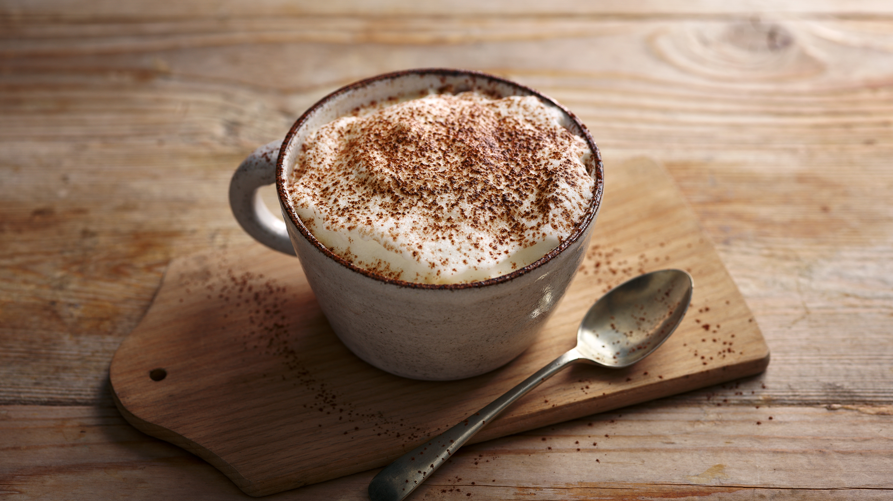

Elevate your coffee game with these easy and delightful recipes. From classic favorites to creative twists, there’s something for every coffee lover!
Classic Latte
A creamy blend of espresso and steamed milk, topped with a thin layer of foam.
Perfect for cozy mornings or a relaxing afternoon.
Ingredients:
- 1 shot of espresso
- 8 oz steamed milk
- Thin layer of foam
Instructions:
- Prepare a shot of espresso using your espresso machine.
- Steam 8 ounces of milk until it's creamy and frothy.
- Pour the steamed milk into the espresso, holding back the foam with a spoon.
- Top with a thin layer of foam and serve hot.
Cappuccino
An Italian classic with equal parts espresso, steamed milk, and foam.
Ideal for a quick pick-me-up or a sophisticated treat.
Ingredients:
- 1 shot of espresso
- 4 oz steamed milk
- 4 oz foam
Instructions:
- Prepare a shot of espresso.
- Steam 4 ounces of milk until it’s silky and frothy.
- Pour the steamed milk into the espresso.
- Top with an equal amount of foam for a creamy texture.

Mocha
A delicious combination of espresso, chocolate syrup, and steamed milk.
Great for chocolate lovers who enjoy a sweet twist.
Ingredients:
- 1 shot of espresso
- 2 tbsp chocolate syrup
- 8 oz steamed milk
- Whipped cream (optional)
Instructions:
- Prepare a shot of espresso and pour into a cup.
- Mix the chocolate syrup into the espresso.
- Steam 8 ounces of milk and pour into the cup, stirring gently.
- Top with whipped cream if desired.

Iced Coffee
Freshly brewed coffee poured over ice and served chilled.
A refreshing way to enjoy coffee on a hot day.
Ingredients:
- 1 cup brewed coffee (cooled)
- Ice cubes
- Milk or cream (optional)
- Sugar (optional)
Instructions:
- Brew a strong cup of coffee and allow it to cool.
- Fill a glass with ice cubes.
- Pour the cooled coffee over the ice.
- Add milk or cream and sugar to taste.
- Stir and enjoy!
Espresso Martini
A sophisticated cocktail made with espresso, vodka, and coffee liqueur.
Perfect for a night out or a special occasion.
Ingredients:
- 1 shot of espresso (cooled)
- 2 oz vodka
- 1 oz coffee liqueur (e.g., Kahlúa)
- Ice cubes
Instructions:
- Prepare a shot of espresso and let it cool.
- In a cocktail shaker, combine espresso, vodka, and coffee liqueur with ice.
- Shake well and strain into a chilled martini glass.
Affogato
A scoop of vanilla ice cream topped with a shot of hot espresso.
An indulgent dessert for coffee lovers.
Ingredients:
- 1 scoop vanilla ice cream
- 1 shot of espresso
Instructions:
- Scoop vanilla ice cream into a small bowl or glass.
- Prepare a shot of espresso and pour it over the ice cream.
- Serve immediately and enjoy!